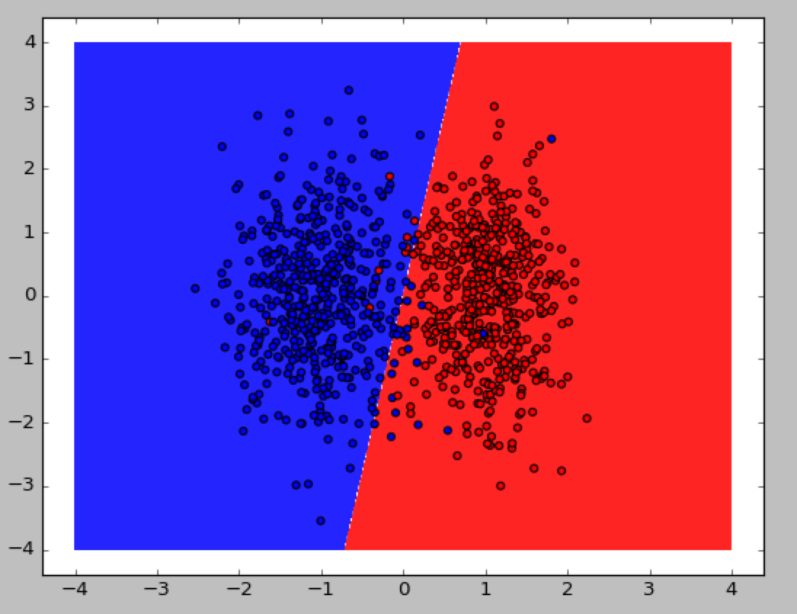
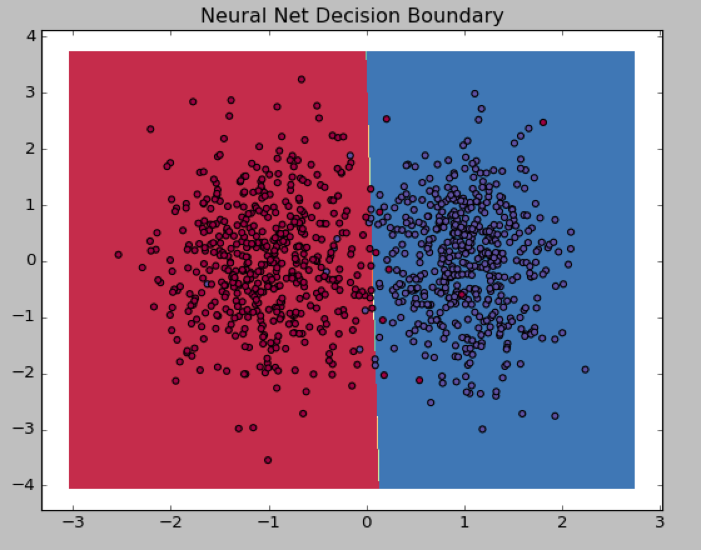

Logistic Regression
1. The decision boundary obtaied by running LogisticRegression.py on Linear Dataset:
The decision boundary obtaied by running LogisticRegression.py on NonLinear Dataset:
2. Can your logistic regression classifier learn non-linear decision boundaries? Logistic regression could work if we applied more non linear features to it such as polynomials. However, the data is not linearly separable so Logistic Regression won’t be able to fit the data using the method proposed in class.
Neural Networks
The decision boundary obtaied by running NeuralNet.py on Linear Dataset with 1 hidden layer:
The decision boundary obtaied by running NeuralNet.py on NonLinear Dataset with 1 hidden layer:
3. Can your neural network model (with one hidden layer) learn non-linear decision boundaries? Why or why not? No, since a neaural network with 1 hidden layer acts close to the logistic regression.
4. What effect does learning rate have on how your neural network is trained? The Learning rate in a neural network is part of the the function that takes care of updating the weights during the propagations, this is essential for the algorithm since it is what defines the scale in which weights are modified, so you have to make sure the rate is not too small or too big since both can cause problems.
5. What effect does the number of nodes in the hidden layer have on how your neural network is trained? If the data set is linearly separable then there is no need for hidden layers. If it is not the case then it’s important to eliminate unnecessary redundant nodes. The more hidden layers we have the more complex functions it is possible to fit. But more hidden layers requires more computation. So it is important to pick a small optimal number.
Number of hidden layers: 3
Number of hidden layers: 20
Number of hidden layers: 100
Credits and Bibliography
Cite any papers or other references you consulted while developing your solution. Citations to papers should include the authors, the year of publication, the title of the work, and the publication information (e.g., book name and publisher; conference proceedings and location; journal name, volume and pages; technical report and institution). Material on the web should include the url and date of access.
Credit any joint work or discussions with your classmates.